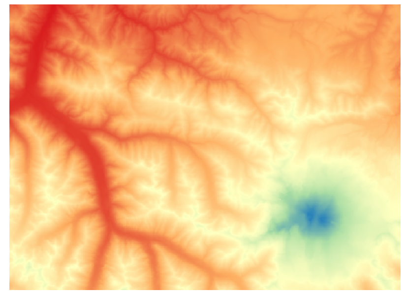
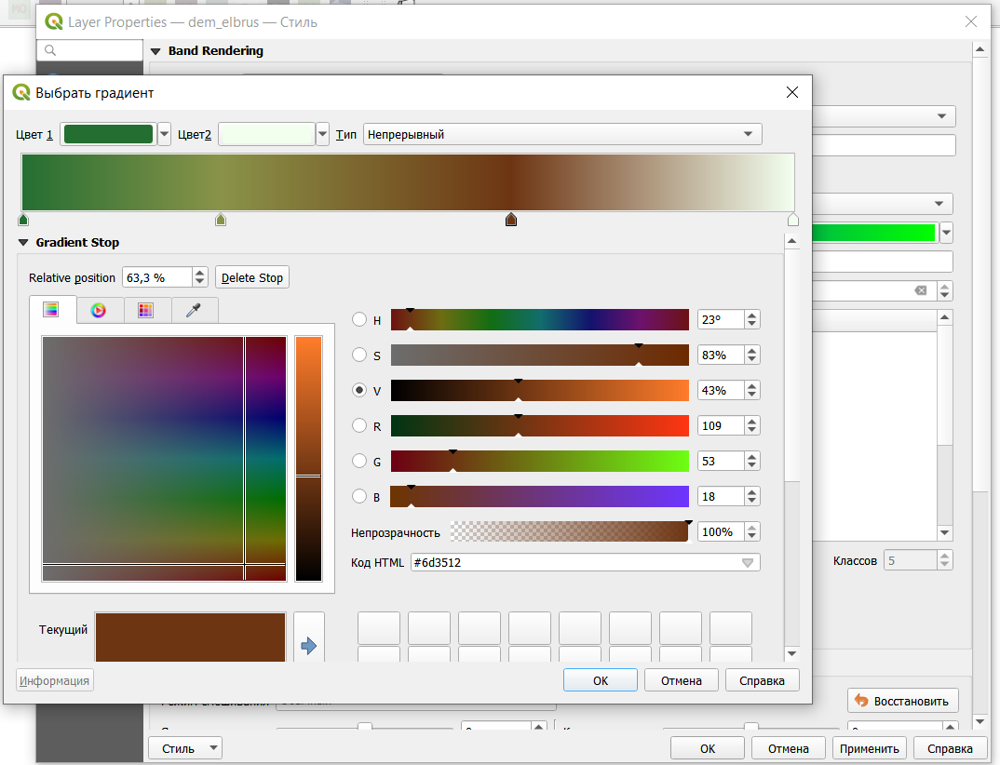
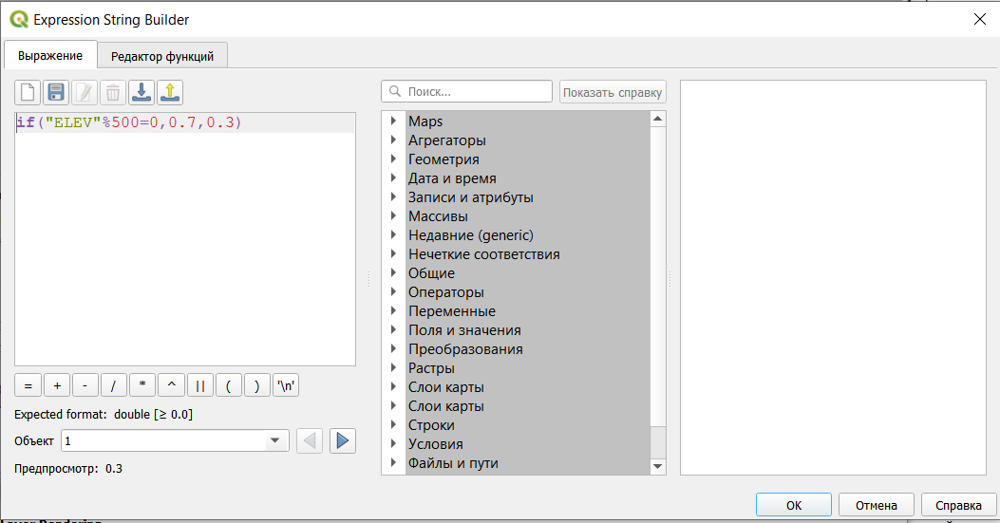

Анализ рельефа
1 Цифровая модель рельефа
Цифровая модель рельефа (ЦМР) — это растровое представление непрерывной поверхности, обычно относящееся к поверхности Земли1.
Различают цифровую модель рельефа и цифровую модель местности. Разница между ними состоит в том, что цифровая модель местности включает в себя все объекты, расположенные на поверхности, тогда как цифровая модель рельефа - это только поверхность земли без растительности и строений.
Цифровые модели рельефа, как правило, строят либо по результатам интерполяции, либо на основе открытых данных.
Самым распространенным источником данных о рельефе является цифровая модель рельефа SRTM (shuttle radar topographic mission). Эта цифровая модель была получена в 2000 году на основе спутниковой радарной съемки. Она охватывает планету между 54 градусами южной широты и 60 градусами северной широты. Подробнее на русском можно почитать про нее здесь
Скачать данные SRTM можно на сайте Геологической службы США (https://earthexplorer.usgs.gov/) или с помощью плагина SRTM downloader2.
Для использования модуля и загрузки данных напрямую из QGIS все равно необходимы реквизиты аккаунта на сайте USGS.
Значительным недостатком SRTM является ее ограниченный пространственный охват, из-за которого значительная часть нашей страны не покрыта этой цифровой моделью рельефа.
Для примера и выполнения работы были скачаны данные для окрестностей Эльбруса (файл dem_elbrus.tiff).
Из SRTM выгружается сразу целая 1-градусная трапеция (фрагмент 1 градус по широте и 1 градус по долготе), в этом случае трапеция была обрезана до более маленького фрагмента (вообще не очень рекомендую работать с большими растрами, охватывающими сразу градус и более по долготе и широте).
Более современной и точной цифровой моделью рельефа является модель FABDEM, к тому же она действительно глобальная и охватывает всю территорию земного шара.
Немного почитать о ней на русском можно по ссылке.
Самое главное ее отличие от более ранних моделей в наличии процессинга и удалении из нее объектов, расположенных на поверхности Земли.

Сама модель является открытой и данные можно скачать по ссылке из репозитория - https://data.bris.ac.uk/data/dataset/s5hqmjcdj8yo2ibzi9b4ew3sn
Все данные организованы в архивы, которые включают в себя охват 10 широты на 10 градусов долготы. Растровые данные внутри архивов - это одноградусные трапеции (как и в SRTM).
Для того, чтобы понять, какой именно архив и файл из него нужен вам на исследуемую территорию, можно скачать файл FABDEM_v1-2_tiles.geojson и открыть его либо в QGIS, либо с использованием сервиса geojson.io. Прямоугольники в этом файле показывают одноградусные трапеции, а в их атрибутах указано название архива и файла.

В каждой ячейке исходного растрового изображения содержится значение высоты.
Добавление растрового слоя осуществляется через строку меню Слой \(\longrightarrow\) Добавить слой \(\longrightarrow\) Добавить растровый слой.

После открытия файла его лучше сразу перепроецировать на лету в EPSG:3857.
Перепроецирование на лету не будет изменять систему координат слоя, а только изменит систему координат проекта и то, как ваша карта будет отображаться на экране.
Перепроецирование на лету может быть выполнено с использованием кнопки  в правом нижнем углу основного окна программы.
в правом нижнем углу основного окна программы.
В результате будет открыто изображение рельефа в оттенках серого цвета.

Это изображение можно сделать цветным, для этого нужно открыть свойства слоя. В настройках стиля нужно выбрать тип изображения Одноканальное псевдоцветное.
Одноканальное здесь очевидно потому, что изображение не поделено на каналы и существует только в одном.


Градиент можно также создать самостоятельно с помощью редактора градиентов.


Или выбрать из готового каталога градиентов. Для этого при создании нового градиента нужно выбрать каталог cpt-city.

Далее в каталоге слева выбрать тип градиента Topography и подобрать нужный градиент (можно взять elevation или с3t3).

2 Теневой рельеф3
2.1 Расчет теневого рельефа
Для более наглядного отображения рельефа на карте рассчитывается теневой рельеф, который строится с использованием позиции источника направленного света, или теневая отмывка.

В данном случае одним из самых важных параметров является Масштабирование по Z - этот параметр позволяет соотнести между собой единицы измерения плановых координат и высот. В нашем случае высоты в ячейках растра приведены в метрах, а координаты - в градусах., кроме того, стоит учитывать, что в географических системах координат искажение зависит от долготы.
С этим можно справиться двумя способами - перепроецировать растра в прямоугольную систему координат или задать масштабирование по Z (Z-factor). Фактически с помощью этого коэффициента мы переходим от градусов к метрам. Так как у нас окрестности Эльбруса, то можно воспользоваться значением коэффициента для 40 градусов долготы - 0.00001171.4
Азимут и вертикальный угол задают положение источника света.

Этот теневой рельеф можно использовать, чтобы добавить дополнительный объем подложке (предварительно нужно добавить) или исходному рельефу растра. Для этого нужно открыть свойства слоя с теневым рельефом и изменить режим смешивания на Добавление, Осветление или Затемнение (также можно поэкспериментировать с настройками яркости и контрастности).


Также можно воспользоваться функцией Цветной рельеф, которая позволяет создавать классы автоматически и задавать им цвет.

С использованием такого растра может быть построена трехмерная поверхность, отображающая рельеф местности, а также выполнен ряд вычислений для морфометрического анализа рельефа.

Все растровые операции здесь осуществляются за счет разности значений между ячейками.
2.2 Настройка теневого рельефа как стиля растрового слоя
Рассчитывать теневой рельеф и сохранять его в отдельный слой не обязательно, вы можете просто выбрать его как тип стиля для растрового слоя в настройках свойств.

Полученный теневой рельеф после настройки будет отображен на карте.

При создании теневого рельефа с использованием настроек стиля растрового слоя на карте могут появляться артефакты - небольшая “рябь” в картинке.

2.3 Использование модуля Terrain shading
Более художественных результатов при создании теневого рельефа позволяет добиться модуль Terrain shading.
Чуть подробнее про его функции можно почитать в блоге разработчика.
Установка модуля осуществляется стандартно (Модули \(\longrightarrow\) Управление модулями). После установки модуль должен появиться у вас в панели Инструменты анализа.

Модуль содержит сразу три функции, которые позволяют строить теневую отмывку:
- Hillshade (terrain shading) - аналогичен стандартному построению теневого рельефа;

- Shadow depth - инструмент для генерации теней;

- Toposhade - комбинация теневого рельефа и индекса топографического положения (о нем будет еще чуть дальше), который показывает выпуклость и вогнутость рельефа. Такая комбинация позволяет добиться более выраженной карты теневого рельефа.

Полученные новые растры можно комбинировать друг с другом и другими слоями для получения более красивого результата.

3 Расчет параметров рельефа
3.1 Крутизна склонов5
Расчет крутизны склонов или их уклона и экспозиции осуществляется на основе производных первого порядка.
3.1.1 Расчет крутизны склонов
Рассчитаем крутизну склонов - угол наклона каждого склона в градусах.


3.1.2 Выделение территорий пригодных для строительства с учетом уклона
Для того, чтобы выделить области пригодные для строительства, воспользуемся переклассификацией растра.
При переклассификации будем рассматривать территории с уклоном менее 10 %.
Так как уклон был рассчитан в градусах, а параметр пригодности для строительства задан в процентах, то пересчитаем этот параметр в градусы по формуле:
\[ Slope_{degree}=arctg(\dfrac{Slope_{percent}}{100}) \]
Полученное значение пригодности - 6 градусов.
Переклассифицируем растр и выделим области пригодные или непригодные для строительства.

Обратите внимание, что здесь в дополнительных параметрах можно указать, как именно будут задаваться границы интервалов, то есть будут ли включаться в них нижний или верхний предел интервала.

В таблице реклассификации следует ввести границы интервалов и соответствующее им значение (эти значения должны быть целочисленными.

В результате будет получен дискретный растр с двумя значениями (или с тем количеством значений классов, которое вы указали в таблице реклассификации.

3.2 Экспозиция склонов6
Экспозиция поверхности – угол по часовой стрелке между определенным направлением (как правило, на север) и проекцией уклона на горизонтальную плоскость; фиксирует направление (азимут) максимального уклона (градиента) земной поверхности7.
Эта функция позволяет определить ориентацию склонов по сторонам света.


3.3 Расчет неоднородности рельефа8
Также по растру с данными о рельефе может быть рассчитана неоднородность рельефа.
Этот показатель рассчитывается на основе разности значений между пикселями в сетке 3 на 3. Таким образом, каждый полученный пиксель содержит разницу между центральным пикселем и 8 его окружащими.


4 Построение трехмерной поверхности
Также QGIS поддреживает отображение трехмерных поверхностей. Для этого нужно просто в строке меню выбрать Вид - Новая 3D карта.

После чего в окне программы появится окно трехмерной карты (перемещение по карте левой кнопкой мыши, поворот и наклон - колесико, приближение - правая кнопка мыши).

Сразу после открытия нового окна поверхность все еще является плоской, потому что не задано на основе чего строить трехмерную поверхность.
В окне трехмерной карты нужно нажать кнопку Настройки (в панели значков крайняя справа) и в открывшемся окне настроек выбрать тип DEM (raster layer), высота (растровый слой с высотами) и вертикальный масштаб (здесь лучше всзять что-то от 1 до 5, чтобы поверхность была повыразительнее).
Дополнительно можно добавить Terrain shading (фактически теневая отмывка) и подкорректировать tile resolution (чем больше, тем более подробным будет рельеф), и skirt height (если правильно нашла - высота подставки под саму поверхность).

После чего в окне будет отображена трехмерная поверхность.

5 Создание горизонталей
Из растра со значениями высот могут быть извлечены горизонтали

Расстояние между изолиниями - это фактически высота сечения рельефа, то есть через сколько мы будем проводить горизонтали.

Полученные изолинии

Настроим горизонтали таким образом, чтобы каждая пятая была утолщенной, добавим подписи и настроим их так, чтобы они были “головой вверх”.
Начнем с настройки толщины линий. Для этого в свойствах слоя выберем настройку толщины в зависимости от выражения.
Далее пропишем логическое выражение: if(“ELEV”%500=0,0.7,0.3). В этом выражении перед запятой прописано условие - высота горизонтали делится на 500 без остатка, потом толщина линии, если условие выполняется, и толщина, если условие не выполняется.

Результат

Добавим подписи.

Но при таком добавлении подписей, будут подписаны все горизонтали, а мы хотим подписать только утолщенные. Для этого нужно прописать выражение, подобное тому, что мы писали выше: if(“ELEV”%500=0,“ELEV”,““).

Добавим белую обводку подписям, чтобы они не сливались с горизонталями

Сделаем так, чтобы они размещались на линии и изгибались в соответствии с ней.

И настроим подписи так, чтобы все они смотрели головой в сторону увеличения высоты.


В результате получим горизонтали, где каждая пятая будет утолщена и подписана головой в сторону увеличения.
6 Построение профиля местности
В актуальных версиях программы построения профиля местности по цифровой модели рельефа является функцией по умолчанию. Этот инструмент можно открыть из строки меню Вид \(\longrightarrow\) Профиль высот.

Окно профиля высот открывается в нижней части интерфейса. Ваша цифровая модель рельефа (если растр с ней загружен в проект должна автоматически добавиться в левую часть окна построения профиля.

Если ваша цифровая модель рельефа не добавилась в высотный профиль автоматически, то вам нужно проверить ее настройки.
В свойствах слоя (открываются двойным кликом или кликом правой кнопки мыши и выбором пункта Свойства из открывшегося контекстного меню) необходимо найти пункт Высота и поставить галочку напротив настройки “Представляет собой данные высоты”.

После этого ваша цифровая модель будет автоматически добавлена в окно высотного профиля.
Построение профиля может происходить двумя способами:
Захват кривой
 - отрисовка линии профиля осуществляется вручную прямо на карте;
- отрисовка линии профиля осуществляется вручную прямо на карте;Захват кривой из объекта
 - использование уже существующей линии из векторного слоя.
- использование уже существующей линии из векторного слоя.
В первом случае необходимо просто нарисовать нужную вам линию профиля (она может быть отрисована как любая ломаная линия), по которой будет происходить построения.

При перемещении курсора по графику или линии профиля вы увидите перемещающуюся точку, показывающую конкретное положение.
Функция прилипания  как и при обычной векторизации позволяет использовать другие объекты в качестве исходных.
как и при обычной векторизации позволяет использовать другие объекты в качестве исходных.
Полученный профиль вы можете сохранить в виде картинки графика или файла pdf  или же результаты могут быть сохранены в виде линии профиля (в двумерном и трехмерном видах) для последующего использования в ГИС или CAD программах и в виде таблицы значений высот вдоль профиля.
или же результаты могут быть сохранены в виде линии профиля (в двумерном и трехмерном видах) для последующего использования в ГИС или CAD программах и в виде таблицы значений высот вдоль профиля.

Footnotes
Что такое цифровые модели рельефа (ЦМР) - https://pro.arcgis.com/ru/pro-app/latest/tool-reference/spatial-analyst/exploring-digital-elevation-models.htm↩︎
Плагин SRTM-Downloader — загрузка SRTM с сервера прямо в QGIS https://cartetika.ru/tpost/98m7ngx971-plagin-srtm-downloader-zagruzka-srtm-s-s↩︎
https://docs.qgis.org/3.16/en/docs/user_manual/processing_algs/qgis/rasterterrainanalysis.html?highlight=relief%20analysis#hillshade↩︎
https://www.esri.com/arcgis-blog/products/product/imagery/setting-the-z-factor-parameter-correctly/↩︎
Документация функции https://docs.qgis.org/3.16/en/docs/user_manual/processing_algs/qgis/rasterterrainanalysis.html?highlight=relief%20analysis#slope↩︎
Экспозиция - https://docs.qgis.org/3.16/en/docs/user_manual/processing_algs/qgis/rasterterrainanalysis.html?highlight=relief%20analysis#aspect↩︎
Основные геоморфометрические параметры: теория - https://gis-lab.info/qa/geomorphometric-parameters-theory.html#%D0%9E%D1%81%D0%BD%D0%BE%D0%B2%D0%BD%D1%8B%D0%B5_%D0%B3%D0%B5%D0%BE%D0%BC%D0%BE%D1%80%D1%84%D0%BE%D0%BC%D0%B5%D1%82%D1%80%D0%B8%D1%87%D0%B5%D1%81%D0%BA%D0%B8%D0%B5_%D0%BF%D0%B0%D1%80%D0%B0%D0%BC%D0%B5%D1%82%D1%80%D1%8B↩︎
https://docs.qgis.org/3.16/en/docs/user_manual/processing_algs/qgis/rasterterrainanalysis.html?highlight=relief%20analysis#ruggedness-index↩︎
https://download.osgeo.org/qgis/doc/reference-docs/Terrain_Ruggedness_Index.pdf↩︎